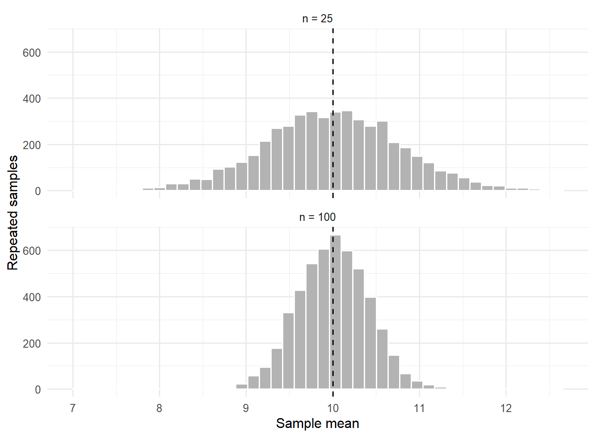
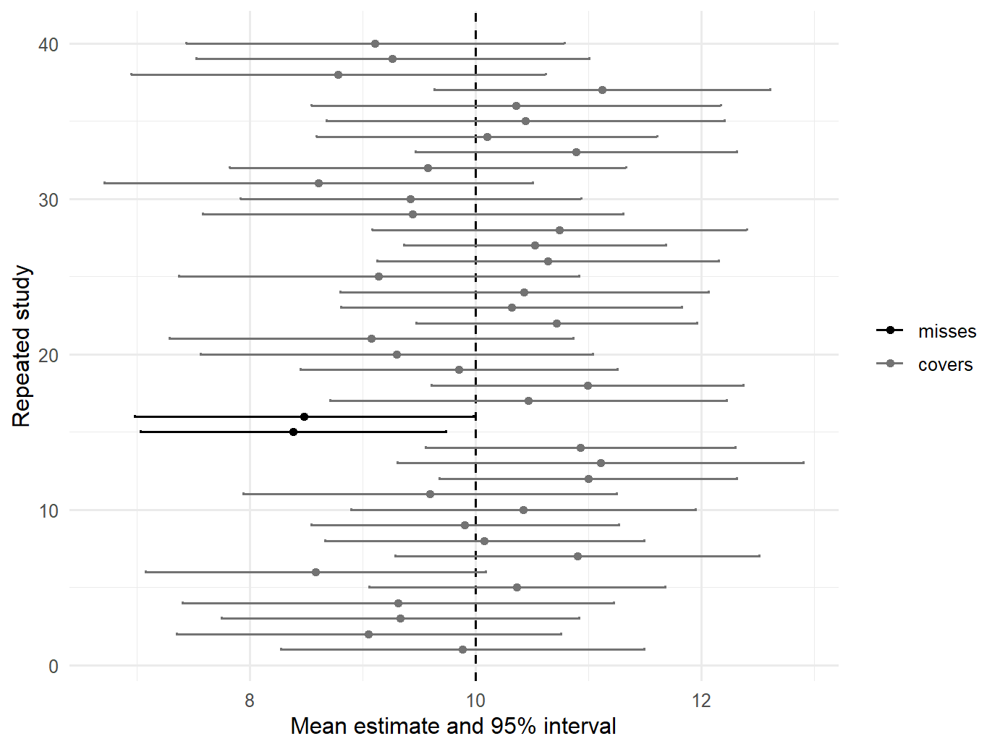
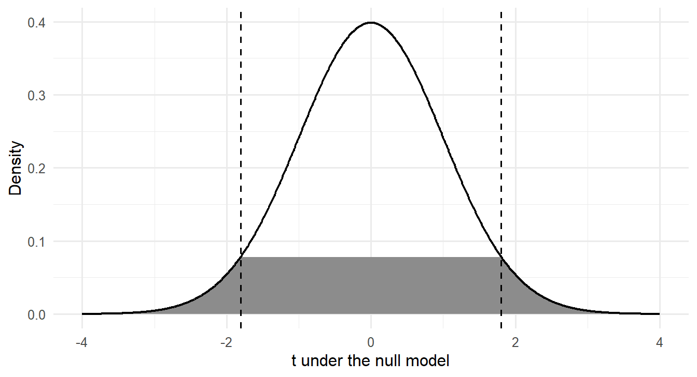
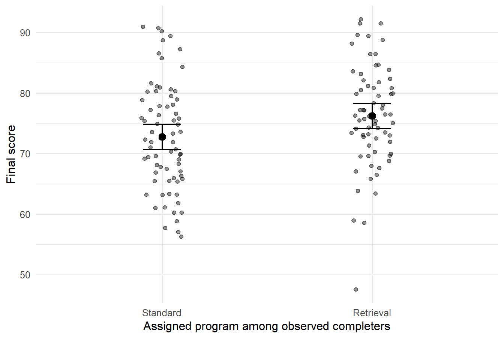
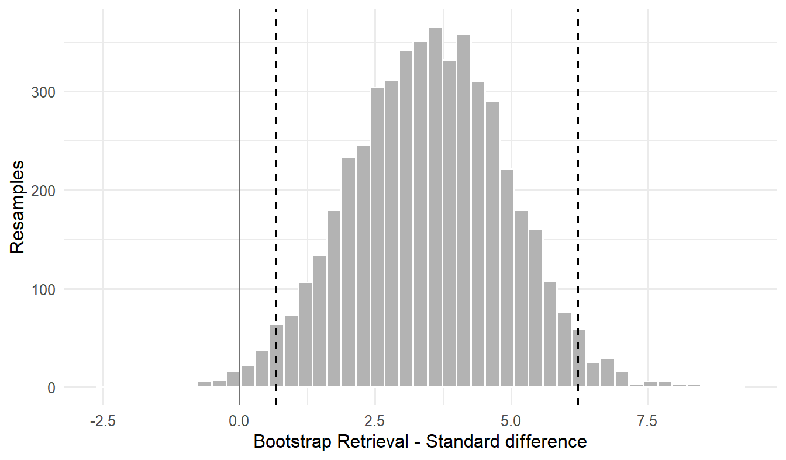

Estimation, Confidence Intervals, z and t Tests, and Effect Sizes
TipChapter box
Research question: Across comparable repetitions of the same two-school enrolment, course, grading, and recording process, how does mean final mathematics grade differ between Gabriel Pereira (GP) and Mousinho da Silveira (MS)?
Candidate answer and status: No prospective hypothesis was specified. The comparison was chosen after the data were available and is exploratory.
STAT-E — Empirical evidence: Final grades and observed school membership for 349 GP and 46 MS students. The documented final-grade scale is 0–20, all students have a final grade, and 38 recorded outcomes equal zero under the documented coding.
STAT-J — Statistical justification: Welch inference is conditioned on the analytic inclusion rule and a stable process with independent students and finite school-specific variances; no probability sampling or school assignment is documented.
STAT-I — Statistical inference: Estimate the GP-minus-MS mean contrast from all documented records, together with its standard error, interval, and exploratory test.
STAT-C — Bounded statistical claim: The GP-minus-MS estimate is 0.64 points (95% CI [-0.70, 1.99]); the exploratory interval spans zero, so the direction of the comparable-process contrast remains inconclusive.
SUB-E — Contextualized empirical evidence: The outcome is one end-of-year mathematics grade on a 0–20 scale for one cohort in each of two schools.
SUB-J — Substantive justification: School was attended rather than assigned, and one course grade is a narrow measure of mathematics attainment.
SUB-I — Substantive inference and interpretation: GP has the higher observed mean, but the model-conditioned interval remains compatible with differences in either direction and no educational-importance threshold was prespecified.
SUB-C — Bounded substantive claim: GP’s observed cohort mean exceeds MS’s by 0.64 grade points. For the corresponding contrast across comparable repetitions, the exploratory 95% CI [-0.70, 1.99] leaves the direction inconclusive; no causal school effect or broader population transport is supported.
Opening Problem
The sustained research question compares mean final mathematics grade between students represented by GP and MS. The evidence contains 395 students from two Portuguese secondary schools and was curated from the public Student Performance dataset (Cortez, 2008). It is observational: neither students’ entry into the dataset nor school membership arose from a documented probability-sampling or randomized-assignment mechanism.
The observed cohort difference is an exact description of these students. An interval requires a different target: a contrast for comparable repetitions of the same two-school enrolment, course, grading, and curation process. The model extends beyond the observed cohort only under stability and independence conditions; it does not extend to other schools or populations.
The chapter also uses one-mean, one-proportion, paired, bootstrap, power, and simulation examples with a fully stated probability process as technical illustrations. Each clarifies a statistical mechanism and may properly stop at a bounded statistical claim (STAT-C) rather than acquire an artificial substantive claim.
ImportantThe central discipline
Statistical inference does not turn a convenience dataset into a random sample, repair attrition, remove measurement error, or create a causal comparison. It quantifies a specified kind of uncertainty under a stated model. A defensible claim keeps that model-based uncertainty separate from design and measurement limitations.
NoteThree perspectives on the same question
| Perspective | Work in this chapter |
|---|---|
| Argument | Build STAT-E + STAT-J -> STAT-I -> STAT-C; then let SUB-E situate STAT-E, SUB-J augment and evaluate STAT-J, SUB-I interpret STAT-I, and STAT-C bound and calibrate SUB-C. |
| Workflow | Reconstruct how an exploratory question is framed, specify its target and method, estimate and check it, interpret it substantively, and communicate one bounded answer. |
| Evaluation | Check Question alignment, Evidence integrity, Justification adequacy, Inferential adequacy, Transition fidelity, Claim calibration, and Cross-question coherence without treating them as a score. |
The closing application makes these perspectives explicit. The intervening method blocks supply the statistical mechanisms needed for that application.
Five Inferential Objects
Statistical language becomes much clearer when five nouns are kept separate. Table 1 names each one, the question it answers, and the form it takes in the school comparison used throughout this chapter.
The two schools in the worked dataset are Gabriel Pereira (GP) and Mousinho da Silveira (MS).
| Object | Question it answers | Example |
|---|---|---|
| Parameter | What fixed but unknown feature of a population or process is being described? | a population mean final grade, \(\mu\) |
| Estimand | Which parameter or contrast is the analysis intended to learn? | \(\mu_{GP}-\mu_{MS}\) for two school-specific means |
| Estimator | Which rule will turn a random sample into an estimate? | \(\bar X_{GP}-\bar X_{MS}\) |
| Estimate | What number did that rule produce in this dataset? | 0.64 grade points |
| Standard error (SE) | How much would the estimator ordinarily vary across repeated studies under the model? | 0.672 grade points |
A statistic is any numerical function of observed data. An estimator is a statistic used as a rule for learning an estimand. The same observed number can therefore play different roles depending on the question.
The estimand must precede the calculation
Suppose \(Y\) is final grade and \(G\) identifies school. A marginal difference in school means is
\[ \Delta=E(Y\mid G=GP)-E(Y\mid G=MS). \]
This is not automatically a causal effect of attending one school rather than the other. The recorded students were not randomly assigned to schools, and the two school samples may differ in prior preparation, neighborhood, selection, or other features. The estimand remains a non-causal between-school contrast unless a stronger design argument is supplied. The next section separates its two forms, one fixed to the records in hand and one defined for the process that produced them.
The synthetic program example raises a different issue. Assignment was randomized among consenters, but final scores are missing for some assigned students. A complete-case contrast describes observed completers. It is not automatically the intention-to-treat effect among everyone assigned, because completion occurs after assignment and differs across programs.
An observed-sample description and a superpopulation estimand are different targets
Two targets can share the same arithmetic and still be different objects, and Chapter 1 separates them in both of its worked studies.
For the 395 students in the analytic sample, the GP mean minus the MS mean is exactly 0.64 grade points, conditional on the recorded observations and their documented coding. That number is an observed-sample description. No sampling interval is needed for this fixed descriptive contrast. Attaching one would confuse a description of the records with inference about a stochastic target.
A confidence interval and a test require a stochastic target. For the school comparison this chapter therefore defines the model-based superpopulation estimand
\[ \Delta_{\mathcal S}= E(Y\mid G=GP,\mathcal S)-E(Y\mid G=MS,\mathcal S), \]
where \(\mathcal S\) is a hypothetical superpopulation of student records generated by the same two-school enrolment, course, grading, and curation process that produced these data. \(\Delta_{\mathcal S}\) is not a feature of the 395 observed students; it is a feature of the process imagined to have produced them, and it is the only quantity the Welch interval and p-value in this chapter describe.
Naming that target obliges the analysis to state five things before any interval is reported.
- The repetition being imagined. Fresh cohorts of records produced by the same two-school process, not a fresh probability sample from all Portuguese students. The repetition is a modelling device; the documentation records no sampling or assignment mechanism that would make it a design fact (Cortez, 2008).
- Dependence. Students are treated as independent within each school-specific distribution, with no residual within-school or within-class dependence left unaccounted for in the standard error. Only two schools appear, so between-school variation cannot be estimated from these data at all.
- Missingness and selection. The curated variables contain no blank cells, so no missing-data model is fitted. The estimand instead conditions on inclusion in the analytic sample, and the 38 grades recorded as zero are retained under the documented coding rather than treated as unrecorded outcomes.
- Process stability. The record-generating process is assumed unchanged across the recorded year, so that each group is a draw from a stable distribution with finite variance.
- Prespecification status. The contrast was chosen to illustrate a two-sample procedure after the data were already available. It is therefore exploratory: its p-value is model-based evidence under the working model, not confirmatory control of a prespecified error rate.
Those five statements contribute to STAT-J, and \(\Delta_{\mathcal S}\) is the target that STAT-I, STAT-C, SUB-I, and SUB-C must continue to describe. The same distinction governs the other estimands below: every interval in this chapter describes a modelled process quantity, while the matching sample summary describes only the observed students.
The four worked procedures use one compact inferential contract rather than silently changing targets from section to section. The targets, inferential units, and matched procedures are summarized in Table 2.
Here \(\mathcal S\) always means a hypothetical repetition of the same two-school enrolment, course, grading, and curation process, not a wider student population. The unpaired procedures treat students as independent; the paired procedure instead treats the student-level differences as independent and retains the two grades’ within-student dependence. Each analysis conditions on inclusion in the analytic sample, fits no missing-data model because the variables used have no blank cells, and retains recorded zeros under the documented coding. It also assumes a stable process with the finite moments required by its procedure. All four questions were chosen after the data were available, so their tests are exploratory. Exact one-sample \(t\) inference additionally requires independent Normal observations; the score, Welch, and non-Normal \(t\) uses here are model-based approximations whose adequacy must be checked rather than inferred from a universal sample-size rule.
Estimator quality has more than one dimension
Across repeated studies, an estimator can be judged by:
- bias: whether its sampling distribution is centered on the estimand;
- sampling variability: how widely estimates vary;
- mean squared error: a combination of squared bias and variance; and
- robustness: how sensitive the estimator and its uncertainty are to plausible departures from assumptions.
An unbiased estimator can be too variable to be useful. A precise estimator can be precisely wrong if the sample, measurement, or model targets the wrong quantity. Precision is not validity.
Sampling Variation and Standard Errors
Imagine repeatedly sampling \(n\) independent observations from a process with mean 10 and standard deviation 4. Each study produces a different sample mean. The distribution of those means is the sampling distribution of \(\bar X\), shown in Figure 1.
For independent observations with population standard deviation (SD) \(\sigma\), the standard error (SE), the modeled repeated-study SD of the estimator, is
\[ SE(\bar X)=\frac{\sigma}{\sqrt n}. \]
Because \(\sigma\) is usually unknown, the one-sample standard error is estimated by \(s/\sqrt n\). The simulation in Table 3 checks the familiar square-root relationship.
| \(n\) | Mean of estimates | Empirical SE | Theoretical SE |
|---|---|---|---|
| 25 | 9.993 | 0.790 | 0.8 |
| 100 | 10.001 | 0.406 | 0.4 |
The empirical standard error is approximately 0.79 for \(n=25\) and 0.41 for \(n=100\). Four times as many independent observations produce about half the standard error, not one quarter.
Standard deviation and standard error answer different questions
- The standard deviation describes variation among individual observed values.
- The standard error describes modeled repeated-study variation in an estimator.
Increasing \(n\) can make a mean more precise while individual outcomes remain highly variable. Conversely, duplicating observations does not create information: the square-root rule assumes new observations that contribute the kind of independent information specified by the model.
Dependence changes the information count
Students in the same class or school can share instruction, policy, peers, and context. Treating clustered observations as independent can make standard errors too small. For equal cluster size \(m\) and intraclass correlation \(\rho\), a simple planning approximation for the design effect (DEFF) is
\[ DEFF=1+(m-1)\rho. \]
This quantity is not a substitute for a cluster-aware analysis. It shows why 300 students in 12 schools do not necessarily contain the same information as 300 independent students.
Bootstrap intuition and its boundary
A nonparametric bootstrap repeatedly samples observed cases with replacement and recalculates the statistic (Efron, 1979). The spread of the bootstrap statistics estimates sampling variation using the empirical distribution as a stand-in for the population (Efron & Tibshirani, 1993).
Bootstrap resampling does not recreate unobserved nonrespondents, repair a biased sampling frame, invent missing clusters, correct an unreliable measure, or validate an estimator. The resampling unit must also match the design: independently resampling students is inappropriate when the intended uncertainty requires resampling schools or matched pairs.
Four distributions that must not be collapsed
The word “distribution” appears in several roles, and Table 4 keeps them apart.
| Distribution | What varies? | What is held fixed? | Main use |
|---|---|---|---|
| data distribution | individual observed values | the realized dataset | describe cases |
| sampling distribution | an estimator across repeated samples | population/process and sample size | define bias and SE |
| null distribution | a test statistic across repetitions under \(H_0\) | null value and test design | calculate p-values |
| bootstrap distribution | a statistic across resamples of the observed data | empirical dataset and resampling rule | estimate sampling uncertainty |
The bootstrap distribution is not automatically a null distribution. For an interval, cases are resampled without imposing a null claim. For a randomization test, treatment labels or outcomes are rearranged under a specific no-effect or exchangeability condition. Both are simulations, but they simulate different reference processes.
A transparent stratified bootstrap
For the Retrieval-minus-Standard mean difference, a bootstrap resamples students within each observed program group so that both group sizes remain fixed. In each repetition, sample students with replacement separately within the two groups, calculate the difference in sample means, and retain that difference. Percentiles of the resulting distribution form the interval.
The procedure makes three choices explicit: the statistic is a difference in means, the resampling unit is a student, and the observed groups are resampled separately. If schools were the sampling units, this algorithm would be too optimistic because it treats students within a school as if they supplied independent replication.
Confidence Intervals and Coverage
A confidence interval combines an estimate with its modeled sampling uncertainty. A common form is
\[ \text{estimate}\ \pm\ \text{critical value}\times SE. \]
For a mean with unknown population standard deviation, the critical value comes from a \(t\) distribution. The degrees of freedom reflect how the standard error was estimated.
Coverage belongs to the procedure
In repeated use under its assumptions, a 95% confidence-interval procedure covers the fixed estimand in about 95% of studies. A particular computed interval either covers or misses; the frequentist statement does not assign a 95% posterior probability to the fixed parameter. Figure 2 displays forty intervals produced by that procedure from the same known process.

Across 5,000 simulated studies, the estimated coverage was 94.7% for \(n=25\) and 95.3% for \(n=100\). The larger sample reduced average interval width from 3.26 to 1.59 while retaining approximately the same coverage.
z Tests and Intervals
A \(z\) procedure uses a standard Normal reference distribution. For a mean, the classical statistic
\[Z=\frac{\bar X-\mu_0}{\sigma/\sqrt n}\]
requires the population standard deviation \(\sigma\) to be known from outside the current sample, a rare situation in social and behavioral research (Moore et al., 2014). Its standard Normal reference is exact for independent observations from a Normal population with known \(\sigma\). With non-Normal observations it is an approximation that requires a justified Normal approximation for the sample mean. Replacing \(\sigma\) with the sample SD changes the reference procedure to a \(t\) procedure, developed in the next section.
One case does justify a \(z\) reference with real data. A binary outcome has no separate variance parameter: once the null value \(p_0\) is fixed, the standard error is fixed too. The null standard error is therefore \(\sqrt{p_0(1-p_0)/n}\), a known number rather than an estimate, and for a large sample the standardized statistic is approximately standard Normal.
A worked one-proportion z test
There were 265 recorded passes among 395 students, so \(\widehat p=0.671\). Ask whether these data are compatible with an even split.
- Hypotheses. \(H_0:p=0.50\) against the two-sided \(H_A:p\ne0.50\), where \(p\) is the pass probability in the student-level model.
- Null standard error. With \(p_0=0.50\) and \(n=395\), \(\sqrt{p_0(1-p_0)/n}=0.0252\).
- Test statistic. \(z=(\widehat p-p_0)/\sqrt{p_0(1-p_0)/n}=6.79\). There are no degrees of freedom to report: the reference distribution is standard Normal, not a family indexed by an estimated variance.
- P-value. Two-sided, \(2\Phi(-|z|)\), where \(\Phi\) is the standard Normal cumulative distribution function. The value is < .001.
- Interpretation. The observed pass rate is about 6.8 null standard errors above 0.50. These 395 records are strongly incompatible with an even pass-fail split, under a model that treats the students as independent draws.
R’s prop.test() with the continuity correction switched off reports the same test as \(\chi^2=46.14\), which is exactly \(z^2=46.14\), with the same p-value.
The matching interval inverts that same test
The familiar Wald interval \(\widehat p\pm z^*\sqrt{\widehat p(1-\widehat p)/n}\) replaces \(p_0\) by \(\widehat p\) in the standard error. Here that plug-in SE is 0.0236 rather than the null-value 0.0252, and the Wald form can behave poorly with small samples or proportions near 0 or 1.
The Wilson score interval avoids the substitution (Wilson, 1927). It inverts the score test: it collects every null value \(p_0\) that the test above would not reject, and each of those tests uses its own null standard error \(\sqrt{p_0(1-p_0)/n}\). Far from avoiding the null standard error, the score interval is built from it; what it declines to use is the plug-in Wald SE. Solving the resulting quadratic gives
\[ \frac{\widehat p+z^{*2}/(2n)}{1+z^{*2}/n} \ \pm\ \frac{z^*}{1+z^{*2}/n} \sqrt{\frac{\widehat p(1-\widehat p)}{n}+\frac{z^{*2}}{4n^2}}. \]
The 95% Wilson interval is [0.623, 0.715], which prop.test(..., correct = FALSE) reproduces exactly because it is the same inversion. It stays inside the possible 0-1 range and excludes 0.50, matching the rejection at the 5% level. Its scope is still limited by how the students entered the dataset.
t Tests and Intervals
When the SD in the denominator must be estimated from the same sample, that extra uncertainty widens the reference distribution. For independent observations from a Normal population with a common unknown variance, and under \(H_0:\mu=\mu_0\), the standardized statistic follows Student’s \(t\) distribution exactly (Student, 1908):
\[T=\frac{\bar X-\mu_0}{s/\sqrt n},\qquad df=n-1.\]
The degrees of freedom record how much information was spent estimating the SD. Replacing \(\sigma\) by \(s\) alone does not create exactness; independence and the Normal-error model are part of the result. In regression, the analogous exact statement is conditional on a fixed, full-rank design with independent Normal errors of constant variance. The same design and model must govern both the test and the interval. Welch’s two-sample procedure estimates a separate variance in each independent group, while paired inference first reduces each pair to one difference.
A worked one-sample t test and its interval
Use 10 as an illustrative benchmark for the modelled mean. Although 10 is also the individual pass cutoff in this dataset, comparing a mean with 10 does not estimate the fraction of students who passed; that is the distinct \(p_{\mathcal S}\) question analyzed above.
- Hypotheses. \(H_0:\mu_{\mathcal S}=10\) against the two-sided \(H_A:\mu_{\mathcal S}\ne10\).
- Estimate and standard error. \(\bar X=10.42\) with \(s=4.58\) over \(n=395\) students, so \(s/\sqrt n=0.231\). Here \(\sigma\) was estimated rather than known, which is exactly why the reference is \(t\) and not \(z\).
- Test statistic and degrees of freedom. Dividing the unrounded departure \(\bar X-10\) by the unrounded \(s/\sqrt n\) gives \(t=1.80\) with \(df=n-1=394\).
- P-value. Two-sided, \(p=.072\).
- Matching interval. With \(t^*=1.966\), the 95% interval is [9.96, 10.87] on the original 0-20 grade scale.
- Interpretation. The interval contains the illustrative benchmark of 10 and the two-sided test does not reject it at the 5% level. The two statements agree because they use the same estimator, standard error, and reference distribution. These data remain compatible with a process mean from just below 10 to about nine-tenths of a grade point above it.
The interval describes uncertainty for a mean under an independent-student sampling model. The dataset documentation does not justify treating these students as a probability sample of all Portuguese students.
Margin of error is a property of a plan, not a dataset alone
The half-width of a symmetric interval is its margin of error. It depends on the confidence level, estimated variability, sample size, design, and estimator. A higher confidence level widens the interval because a larger critical value is needed. A larger effective sample size narrows it. More decimal places do not create precision.
Before collecting data, a precision target can be more defensible than a ritual power target. “Estimate the mean within one grade point” names an outcome-scale goal. The planning calculation must still state the SD used, expected attrition, clustering, and whether the interval concerns one mean or a difference.
The t approximation is not a mechanical sample-size rule
The one-sample \(t\) procedure is exact for independent Normal observations and often approximately reliable for a mean with moderate non-Normality. It is not guaranteed by a universal rule such as \(n\ge30\). Severe skew, extreme outliers, dependence, or a mean dominated by rare values can remain important at larger \(n\). Inspect the data, understand the design, and ask whether the mean itself is the intended target.
WarningWhat a conventional interval omits
A confidence interval ordinarily quantifies uncertainty from the specified sampling or assignment model. It does not automatically include uncertainty from nonrandom selection, measurement validity, missing-data assumptions, researcher choices, model misspecification, or unmodeled clustering.
Hypothesis Tests and Compatible Values
A hypothesis test compares the observed statistic with values expected under a specified null model. Its parts should be visible.
- Null hypothesis \(H_0\): a precise reference claim about the estimand.
- Alternative hypothesis \(H_A\): the prespecified direction or set of departures of scientific interest.
- Test statistic: the observed departure from the null, scaled by its standard error.
- Reference distribution: the distribution of that statistic when the null model and assumptions hold.
- P-value: the null-model probability of a statistic at least as incompatible with \(H_0\) as the observed statistic, in the direction(s) specified by \(H_A\).
The worked final-grade test above supplies all five parts: \(H_0:\mu=10\); the two-sided \(H_A:\mu\ne10\); the statistic \(t(394)= 1.80\); the \(t\) reference distribution on 394 degrees of freedom; and \(p=.072\). The rest of this section examines what that last number does and does not support.
What a p-value is not
The American Statistical Association emphasizes that a p-value measures compatibility with a specified model, not the truth or importance of a claim (Wasserstein & Lazar, 2016). A p-value is not:
- the probability that \(H_0\) is true;
- the probability that the result occurred “by chance”;
- the probability that replication will succeed;
- the magnitude or importance of the association; or
- the study’s false-positive probability after seeing the result.
It is conditional on the null model, test statistic, sampling or assignment mechanism, and analysis choices.
A test statistic measures distance on an uncertainty scale
The numerator of a \(t\) statistic is an estimated difference from the null. The denominator is the standard error appropriate to that estimate. Thus \(t=2\) means the estimate is two modeled standard errors from the null value; it does not mean that the effect is two outcome units or twice as important. Figure 3 shows where the observed statistic falls under its null model.

The shaded area is .072. It answers a conditional question about repeated statistics under \(H_0:\mu=10\); it does not assign probability to that hypothesis.
One-sided tests require a directional commitment
For an upper-tailed alternative \(H_A:\theta>\theta_0\),
\[p=P_{H_0}(T\ge t_{obs}).\]
For a lower-tailed alternative, the lower tail is used. A one-sided test is defensible only when the direction was scientifically meaningful and fixed before seeing the outcome, an effect in the opposite direction would not support the claim, and the reference distribution matches the test.
For a symmetric \(t\) reference distribution, a one-sided p-value equals half the two-sided p-value only when the observed statistic points toward the prespecified alternative. The paired grade change is negative. Its two-sided p-value is .050. A prespecified lower-tailed test gives \(p=.025\); an upper-tailed test gives \(p=.975\). Choosing the favorable direction after seeing the negative estimate would invalidate the advertised Type I error rate.
Intervals display compatible values
For the paired difference \(D=G_2-G_1\), the estimated mean change is -0.195 grade points with a 95% interval from -0.390 to 0.000. Values inside this interval are more compatible with the data and \(t\) model than values outside it, at the stated confidence level. This does not mean that every inside value is equally plausible or that every outside value is impossible.
The interval is often more informative than a binary decision. Here it rules out a large mean change but does not distinguish a very small negative change from zero at the conventional two-sided 5% threshold.
The test-interval correspondence has conditions. A two-sided level-\(\alpha\) test rejects \(\theta_0\) exactly when the corresponding \(100(1-\alpha)\)% interval excludes \(\theta_0\) only when both procedures use the same estimator, standard error, reference model, sidedness, and multiplicity treatment. A bootstrap percentile interval and a parametric \(t\) test need not correspond exactly. A one-sided test corresponds to a one-sided confidence bound, not automatically to a two-sided interval.
Decisions do not establish truth
If a prespecified decision threshold is needed, report reject \(H_0\) or fail to reject \(H_0\). Do not write “accept the null.” Failing to reject can reflect a small effect, imprecise data, an insensitive design, violated assumptions, or some combination. A decision rule controls long-run error rates under its model; it does not certify either hypothesis in one study.
Match the Method to the Design
The same inferential grammar applies across several common structures, but the estimand and standard error change, as Table 5 summarizes.
| Data structure | Estimand | Estimate | Main procedure/reference |
|---|---|---|---|
| one quantitative sample | \(\mu\) | \(\bar X\) | one-sample \(t\) |
| one binary sample | \(p\) | \(\widehat p\) | score/Wilson for interval |
| two independent quantitative groups | \(\mu_1-\mu_2\) | \(\bar X_1-\bar X_2\) | Welch \(t\) by default |
| two independent binary groups | \(p_1-p_2\) | \(\widehat p_1-\widehat p_2\) | large-sample Wald interval for the difference |
| paired quantitative measurements | \(\mu_D\) | \(\bar D\) | one-sample \(t\) on pair differences |
Familiar t procedures are regression special cases
A one-sample mean procedure is an intercept-only model,
\[Y_i=\beta_0+\varepsilon_i,\]
where \(\beta_0\) is the process mean. A paired procedure applies the same model to the within-student differences \(D_i\). For two independent groups, code \(G_i=0\) for MS and \(G_i=1\) for GP in
\[Y_i=\beta_0+\beta_1G_i+\varepsilon_i.\]
Then \(\beta_1=E(Y\mid G=GP)-E(Y\mid G=MS)\), so the coefficient estimate is the difference in group means. The conventional pooled-variance two-sample test is the equal-variance version of this model. Welch’s procedure keeps separate group variances and uses a different uncertainty calculation. The common grammar is the same—target, estimate, standard error, interval, and bounded claim—even when the standard-error procedure differs.
Two independent means: add variances, not standard errors
For independent group means,
\[ SE(\bar X_1-\bar X_2) =\sqrt{SE(\bar X_1)^2+SE(\bar X_2)^2} =\sqrt{\frac{s_1^2}{n_1}+\frac{s_2^2}{n_2}}. \]
The standard errors are not added directly. Variances add under independence, then the square root returns to outcome units.
Welch’s procedure uses that standard error and an approximate degrees of freedom calculation (Welch, 1947). It does not require equal variances and is a sensible default for two independent means. A pooled-variance test should be used only when a common-variance model is substantively and empirically defensible, not merely because a preliminary variance test was nonsignificant.
Welch’s degrees of freedom are
\[ \nu= \frac{(s_1^2/n_1+s_2^2/n_2)^2} {(s_1^2/n_1)^2/(n_1-1)+(s_2^2/n_2)^2/(n_2-1)}. \]
The value need not be an integer. Software should report it rather than silently replacing it with the pooled value \(n_1+n_2-2\).
The realized GP-minus-MS difference in mean final grade is exactly 0.64 points for these records, with nothing random left in it. The estimand that the Welch procedure addresses is \(\Delta_{\mathcal S}\), defined earlier for the two-school record-generating process. Its estimate is the same 0.64 points, the independently combined SE is 0.672, and Welch’s 95% interval is [-0.70, 1.99], with \(t(60.1)= 0.96\) and exploratory \(p=.343\).
The interval and the test therefore say nothing further about the 395 observed students; they describe \(\Delta_{\mathcal S}\) under the stated working model. Neither removes differences in who attended the two schools, and neither converts a modelled process contrast into a population or causal one.
The official UCI documentation defines final grade G3 on the 0–20 scale and reports no missing values. The focal analysis therefore uses all 395 documented grades, including the 38 recorded zeros. The estimate is 0.642 points (95% interval [-0.702, 1.986], exploratory \(p=.343\)).
Two independent proportions
The recorded pass proportions were 0.676 in GP and 0.630 in MS. Their difference was 0.046 when written as GP minus MS, with a large-sample Wald 95% interval for the difference from -0.102 to 0.194. The standard one-proportion procedure uses a Wilson/score interval, whereas the two-sample interval used here is a plain Wald construction. The earlier caution about Wald intervals therefore applies. The groups are independent only in the working student-level model; the data are not a probability sample and school is not randomized.
Paired observations become one sample of differences
Period-1 and period-2 grades belong to the same student. Treating the 790 grades as independent would discard the pairing and use the wrong standard error. Define
\[D_i=G_{2i}-G_{1i},\]
then analyze the \(n=395\) differences with a one-sample procedure. Pairing can improve precision when within-pair measurements are positively correlated, but it does not by itself make a before-after contrast causal. Time, learning, testing, and other changes occur together.
The paired standard error is
\[ SE(\bar D)=\frac{s_D}{\sqrt{n_{pairs}}}. \]
This formula retains the within-pair covariance because it works with the observed differences. If some students have only one measurement, they do not contribute a complete difference under a complete-pair analysis. The reason for missingness then becomes part of the design audit.
Freeze the analysis sample before comparing procedures
Confidence intervals, tests, and effect sizes should refer to the same students unless a change is explicitly justified. Comparing an estimate based on all 395 students with a sensitivity analysis based on a smaller set of complete cases can confuse an analysis-method difference with a sample-composition difference. Report the inclusion rule and \(n\) for every estimand.
A useful pre-calculation checklist is:
- identify the observational unit and any clusters or pairs;
- define the outcome and group coding;
- state the estimand and direction of subtraction;
- fix the analysis sample and inspect missingness;
- choose the standard error and reference model; and
- decide whether the goal is estimation, testing, prediction, or a formal decision.
The synthetic program contrast reveals a design trap
Among consenters, the completion counts in Table 6 were:
| Program | Incomplete | Complete | Completion rate |
|---|---|---|---|
| Practice | 13 | 77 | 0.856 |
| Retrieval | 20 | 68 | 0.773 |
| Standard | 22 | 71 | 0.763 |

Figure 4 plots the two completer groups with their mean intervals. This is an exploratory, model-conditioned complete-case association: it was selected for illustration after the synthetic data were created, treats observed students as independent, and does not adjust the uncertainty for the six school blocks. The Retrieval-minus-Standard mean difference among observed completers is 3.47 score points. Welch’s 95% interval is [0.58, 6.36], with \(p=.019\). A stratified student bootstrap gives a similar nominal percentile interval, conditional on independent resampling within the two observed completer groups, [0.69, 6.22], whose full shape appears in Figure 5. Agreement between two uncertainty calculations does not repair post-assignment attrition or clustering by six schools.

Errors, Power, Effect Size, and Practical Importance
When a decision rule is used, truth and the decision can combine in the four ways of Table 7.
| State of the null model | Reject \(H_0\) | Fail to reject \(H_0\) |
|---|---|---|
| \(H_0\) is true | Type I error | correct decision |
| a specified alternative is true | correct decision | Type II error |
The significance level \(\alpha\) controls the Type I error probability under the null model and analysis plan. Power is the probability of rejecting \(H_0\) under a specified alternative. Power is not a property of a study in the abstract; it depends on the effect, variance, sample size, design, missingness, test, sidedness, and decision rule.
For a planned two-sided two-sample \(t\) test with 50 independent observations per group, a 3-point difference, and a 9-point standard deviation, the approximate power is only 0.38. A nonsignificant result from such a design could remain compatible with effects that matter.
The significance filter distorts selected estimates
The next simulation sets the true standardized effect to 0.20 and repeatedly collects only 25 independent observations. Across all studies, the estimates center near truth. If only \(p<.05\) studies are selected for attention, their magnitudes are exaggerated on average, as Table 8 records.
| Quantity | Value |
|---|---|
| True standardized difference | 0.200 |
| Mean estimate across all studies | 0.197 |
| Proportion with p < .05 | 0.166 |
| Mean estimate among selected studies | 0.488 |
| Wrong-sign share among selected studies | 0.010 |
This is a significance filter. Low power does not make every estimate too large. It makes published or highlighted estimates conditional on selection, which can produce magnitude errors (Type M) and sometimes sign errors (Type S). Replication and transparent reporting matter because selection changes what is seen.
Contrast magnitude needs units and uncertainty
Effect sizes are most useful when their definition, denominator, uncertainty, and substantive scale are reported explicitly (Lakens, 2013).
For the synthetic program comparison, the raw descriptive contrast is 3.47 final-score points. It is directly interpretable on the score scale. Hedges’ \(g\) standardizes the difference by a pooled within-group SD, following Cohen’s \(d\) (Cohen, 1988), and multiplies by a small-sample correction factor \(J\):
\[ g=J\frac{\bar X_1-\bar X_2}{s_p}. \]
Here \(g=0.400\), with a nominal 95% percentile-bootstrap interval from 0.065 to 0.764, conditional on independent resampling within each observed program group. The interval represents that particular case-resampling scheme; it does not incorporate school clustering or repair post-assignment attrition. This standardization can help compare scales, but it is not a universal measure of importance. It depends on the outcome’s reliability, population variability, group composition, and estimator definition.
For paired grades, the standardized mean change \(d_z=\bar D/s_D=-0.10\). It uses the standard deviation of within-student differences and is not interchangeable with an independent groups \(g\). It is included only as a point-estimate technical illustration; no uncertainty interval for \(d_z\) is claimed here. Always name the denominator.
Raw and standardized estimates answer different questions. The raw interval asks how many final-score points separate the group means. The \(g\) interval asks how large that separation is relative to a pooled within-group SD in these observed completers. Reporting both can help, as Table 9 does, but the raw-scale result usually carries the substantive decision.
| Effect scale | Estimate | 95% lower | 95% upper | Interval method |
|---|---|---|---|---|
| Final-score points | 3.467 | 0.576 | 6.357 | Welch t |
| Hedges g | 0.400 | 0.065 | 0.764 | nominal percentile bootstrap |
Statistical and practical significance are separate judgments
A small p-value can accompany a negligible effect in a large sample. A wide interval can contain both negligible and important effects. Practical importance therefore needs a context-specific threshold, cost, consequence, or decision model. Labels such as “small,” “medium,” and “large” should not replace substantive reasoning.
One useful report asks three separate questions:
- Magnitude: what effects are estimated on a meaningful scale?
- Precision: which values remain compatible with the model and data?
- Importance: which compatible values would matter for the decision or theory?
Prospective precision comes before data collection
If the goal is to estimate one mean with approximate 95% margin of error \(m\),
\[ n\approx\left(\frac{1.96\sigma}{m}\right)^2. \]
With planning SD 9 and desired half-width 1, the normal approximation gives \(n=312\) independent observations. For two equally sized independent groups and a margin of error 1 for their difference, the same planning assumptions give about 623 per group. The calculation is only as credible as its assumed SD, effect or precision target, retention, clustering, and analysis plan.
With average cluster size 25 and \(\rho=.05\), the simple design effect is 2.20. Attrition and unequal clusters require further adjustment. A sample-size number without its inputs is not a reproducible plan.
Precision planning should also allow for uncertainty in the planning inputs. If the SD might plausibly be 7, 9, or 12, calculate all three scenarios. If retention might be 70%-90%, show that range. A sensitivity table makes the cost of optimistic assumptions visible before recruitment begins.
Multiplicity changes the evidence landscape
Testing many outcomes, subgroups, transformations, exclusion rules, or model forms raises the chance of at least one attractive result. With \(m\) independent null tests at level \(\alpha\), the familywise chance of at least one rejection is
\[1-(1-\alpha)^m.\]
For 20 independent tests at \(\alpha=.05\), this probability is about 0.64. Real analyses may have correlated tests, but the lesson remains: distinguish prespecified analyses from exploration, report the full analysis family, and use a multiplicity strategy appropriate to the claims.
From Calculation to a Defensible Claim
Inference should end with a claim whose strength matches the evidence production process. The public UCI dataset contains nonsensitive variables from two Portuguese schools and a derived pass indicator defined as final grade at least 10. Its official source is the UCI Student Performance repository, which documents the observational data and their provenance.
Technical illustrations that stop at STAT-C
Table 10 collects four statistical targets used to explain the inferential grammar. Each is a model-based quantity for the same process, estimated from one analytic sample of 395 students, and each carries the interval produced by the method its design requires. The estimates are also exact descriptions of the observed students; the intervals are not, because a fixed set of records has no sampling error of its own.
| Question | Estimate | 95% lower | 95% upper | Scale |
|---|---|---|---|---|
| Mean final grade | 10.415 | 9.962 | 10.868 | grade points |
| Pass proportion | 0.671 | 0.623 | 0.715 | proportion |
| GP - MS mean grade | 0.642 | -0.702 | 1.986 | grade points |
| Period 2 - Period 1 mean grade | -0.195 | -0.390 | 0.000 | grade points |
A calibrated results paragraph
Among the 395 students recorded in these two schools, 67.1% achieved a final grade of at least 10 (Wilson 95% interval: 62.3% to 71.5%). Mean final grade was 10.42 points (model-based 95% \(t\) interval: 9.96 to 10.87). The realized GP-minus-MS mean difference was exactly 0.64 points; the corresponding modelled two-school process contrast is estimated at the same value (Welch 95% interval: -0.70 to 1.99, exploratory \(p=.343\)), so negative, zero, and positive values of that contrast remain compatible with this evidence. The Period-2-minus-Period-1 mean change was -0.19 points (paired 95% interval: -0.39 to 0.00). The estimates describe the observed cohorts exactly; every interval describes a modelled quantity for the process assumed to have generated those outcomes. The observational dataset does not support a probability-sampling claim about all students, a causal school effect, or a causal effect of time between grading periods.
This paragraph reports estimates before test decisions, gives intervals in original units, avoids “accepting” a null, and separates modeled sampling uncertainty from design scope.
Calculation follows the argument
Software can reproduce each calculation, but it does not choose the estimand, establish independence, justify a one-sided alternative, or determine generalization. Those decisions belong to the argument and must be recorded before the procedure is run.
Argument Record and Three-Perspective Close
The sustained question ends with two linked arguments. Each component is kept short because the statistical details have already been established.
| Code | Concise argument record |
|---|---|
| STAT-E | Final grades and observed school membership for 349 GP and 46 MS students; all documented 0–20 grades are retained, including 38 recorded zeros. |
| STAT-J | Welch inference for \(\Delta_{\mathcal S}\) assumes comparable repetitions of the same two-school process, independent students, finite group variances, stable grading and inclusion, and the documented outcome definition. |
| STAT-I | Exploratory GP-minus-MS estimate 0.642, SE 0.672, 95% interval [-0.702, 1.986], \(p=.343\). |
| STAT-C | For comparable repetitions of the same two-school process, the GP-minus-MS mean-grade contrast is estimated at 0.64 points (SE 0.672; 95% interval [-0.70, 1.99]; exploratory p = .343). The direction remains inconclusive under the working independence, stability, inclusion, and finite-variance conditions; neither wider population generalization nor causality is supported. |
| SUB-E | One end-of-year mathematics grade on a 0–20 scale for one recorded cohort at each of two Portuguese schools. |
| SUB-J | School was attended, not assigned; no probability sample is documented; one course grade narrowly represents mathematics attainment. |
| SUB-I | GP’s observed mean is higher, but compatible process contrasts include both directions; no meaningful-difference threshold was prespecified. |
| SUB-C | GP’s observed cohort mean exceeded MS’s by 0.64 points. Evidence about comparable repetitions is inconclusive, and the study does not support a causal school effect or generalization to other schools or populations. |
The compact record in Table 11 keeps the statistical result and its substantive boundaries traceable in one place.
Argument perspective: trace the four role-specific transitions
| Shared role | Statistical-to-substantive transition |
|---|---|
| Evidence — situates | SUB-E situates STAT-E by identifying the students, schools, course, scale, cohort, and setting represented by the evidence. |
| Justification — augments and evaluates | SUB-J augments and evaluates STAT-J with what school membership and grades mean, while exposing what random sampling, assignment, and measurement do not support. |
| Inference — interprets | SUB-I interprets the STAT-I estimate and interval in grade points and in the school context. |
| Claim — bounds and calibrates | STAT-C bounds and calibrates SUB-C by limiting its direction, uncertainty, status, and scope. |
Table 12 makes the same-role transition explicit: contextual meaning is added without weakening the statistical reservation.
Workflow perspective: reconstruct an exploratory analysis
| Stage | Activity | Application to the school question |
|---|---|---|
| 1 | Conduct the literature review | Understand grades, schools, and collection context. |
| 2 | Frame the research question and candidate answer | State the school question; note that no prospective hypothesis was specified. |
| 3 | Plan design, measurement, and method of inference | Declare \(\Delta_{\mathcal S}\), retention of all documented grades, Welch inference, and its assumptions. |
| 4 | Align and synthesize across questions: proposal phase | Separate the substantive question from technical demonstrations. |
| 5 | Conduct the study and collect or acquire data and contextual information | Acquire the observational evidence and context. |
| 6 | Conduct statistical estimation, checking, and analysis | Estimate the GP-minus-MS contrast and its model-conditioned uncertainty. |
| 7 | Contextualize, justify, and interpret substantively | Interpret grade points without treating school membership as assigned. |
| 8 | Synthesize across questions: implementation phase | Give the inconclusive exploratory answer; keep demonstrations subordinate. |
The reconstruction in Table 13 is operationally iterative even though the stages are numbered for traceability.
Evaluation perspective: calibrate the answer
| Lens | Focused evaluation |
|---|---|
| Question alignment | The marginal school contrast answers the stated associational question, not a causal policy question. |
| Evidence integrity | Group imbalance, only two schools, possible within-school dependence, and the documented inclusion rule remain consequential. |
| Justification adequacy | Welch handles unequal variances but cannot supply sampling, assignment, measurement, or transport support. |
| Inferential adequacy | The estimand, uncertainty, exploratory status, and approximation are explicit. |
| Transition fidelity | Substantive interpretation retains the magnitude, interval, and design limitations. |
| Claim calibration | The observed-cohort description is exact; the comparable-process direction is inconclusive; wider and causal claims are excluded. |
| Cross-question coherence | One substantive question receives one answer; the other examples remain clearly labelled statistical illustrations. |
Table 14 shows why an inconclusive, local, noncausal answer is a calibrated result rather than a failed analysis.
The superpopulation \(\mathcal S\) extends the target from the observed cohort to comparable repetitions of the same two-school process under the declared stability conditions. It does not extend the answer to other schools, other populations, or a causal school comparison.
Reading Bridge
IMS is Introduction to Modern Statistics (Çetinkaya-Rundel & Hardin, 2024), the open OpenIntro textbook. Every linked resource below is publicly accessible.
- Foundations: randomization tests, bootstrap intervals, mathematical models, and decision errors and power.
- Common designs: one proportion, one mean, two independent means, and paired means.
- Worked-data provenance: UCI Student Performance documents the source, variables, and access conditions for the school comparison.
References
Çetinkaya-Rundel, M., & Hardin, J. (2024). Introduction to modern statistics (2nd ed.). OpenIntro. https://openintro.org/book/ims/
Cohen, J. (1988). Statistical power analysis for the behavioral sciences (2nd ed.). Lawrence Erlbaum Associates.
Cortez, P. (2008). Student performance [Dataset]. UCI Machine Learning Repository. https://doi.org/10.24432/C5TG7T
Efron, B. (1979). Bootstrap methods: Another look at the jackknife. The Annals of Statistics, 7(1), 1–26. https://doi.org/10.1214/aos/1176344552
Efron, B., & Tibshirani, R. J. (1993). An introduction to the bootstrap. Chapman and Hall/CRC. https://doi.org/10.1201/9780429246593
Lakens, D. (2013). Calculating and reporting effect sizes to facilitate cumulative science: A practical primer for t-tests and ANOVAs. Frontiers in Psychology, 4, 863. https://doi.org/10.3389/fpsyg.2013.00863
Moore, D. S., McCabe, G. P., & Craig, B. A. (2014). Introduction to the practice of statistics (8th ed.). W. H. Freeman.
Student. (1908). The probable error of a mean. Biometrika, 6(1), 1–25. https://doi.org/10.2307/2331554
Wasserstein, R. L., & Lazar, N. A. (2016). The ASA statement on p-values: Context, process, and purpose. The American Statistician, 70(2), 129–133. https://doi.org/10.1080/00031305.2016.1154108
Welch, B. L. (1947). The generalization of “Student’s” problem when several different population variances are involved. Biometrika, 34(1–2), 28–35. https://doi.org/10.1093/biomet/34.1-2.28
Wilson, E. B. (1927). Probable inference, the law of succession, and statistical inference. Journal of the American Statistical Association, 22(158), 209–212. https://doi.org/10.1080/01621459.1927.10502953
Exercises
Distinguish the Inferential Objects
A volunteer study reports mean weekly study time of 6.4 hours with SE 0.7. Name a plausible estimand, estimator, estimate, and standard error. Then state one population claim that the volunteer design does not support and explain why the small SE cannot repair it.
Interpret an Interval Procedure
A simulation produces 200 nominal 95% confidence intervals, of which 187 cover the true mean. Explain why this result is not by itself evidence of failure, predict how quadrupling the independent sample size should affect average width, and correct the statement, “There is a 95% chance that the true mean lies in this computed interval.”
Match the Method to the Design
For two independent groups, \(n_1=36\), \(\bar x_1=74\), \(s_1=12\) and \(n_2=49\), \(\bar x_2=69\), \(s_2=10\). Estimate \(\mu_1-\mu_2\), calculate its standard error, and construct an approximate 95% interval using critical value 2.00. In one sentence, explain why an independent analysis would be wrong if the same values instead came from matched pairs.
Write One Bounded Answer
Use the reported GP–MS results based on all documented grades. Write one sentence each for STAT-C and SUB-C. Then identify the most consequential issue under Evidence integrity, Transition fidelity, and Claim calibration. Keep the answer to the stated school-comparison question; do not introduce a causal school-effect question.